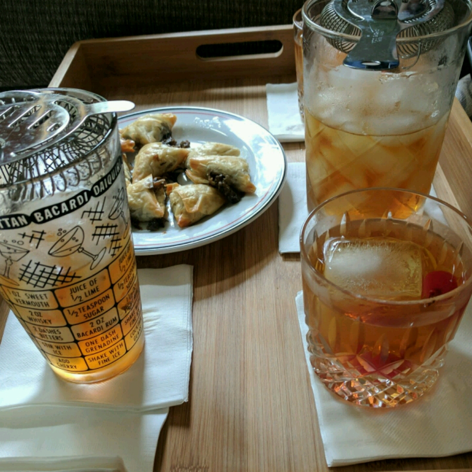

True Manhattan Cocktail

Description
A classic drink. Stir, most Manhattan drinkers like it that way.
Shake it only when asked to do so. May be served up or on the rocks.
Ingredients
- 2 fluid ounces whiskey
- ½ fluid ounce sweet vermouth
- 1 dash bitters
- 1 cup ice cubes
- 1 maraschino cherry for garnish
Steps
-
Place ice in a mixing glass. Pour in vermouth, then whiskey,
and stir. Strain into a cocktail glass. Add a dash of bitters
if desired, and garnish with a cherry.
- Enjoy!
Previous Recipe
Back to Recipe List
Credits for this recipe:
JIBERN
on allrecipes.com.